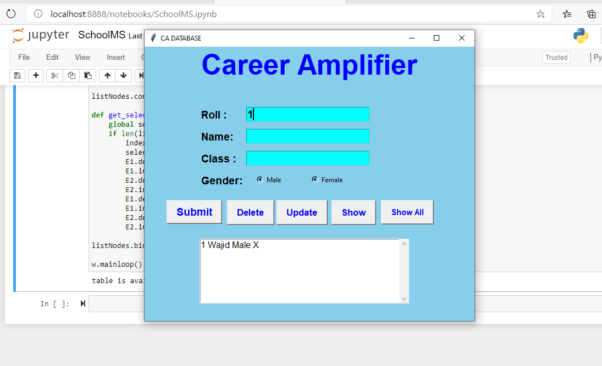
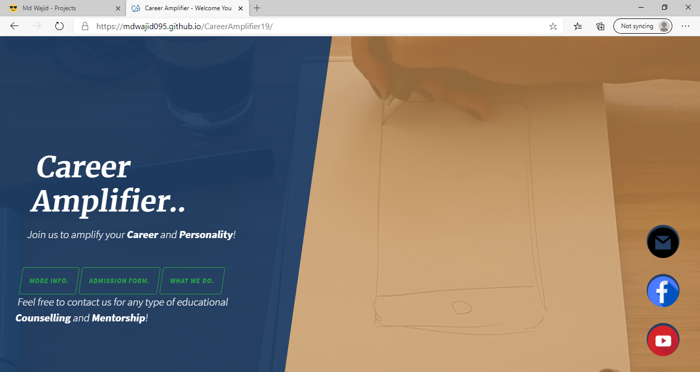

Description : This project is to make a database management system for students using Tkinter and sqlite3.
By using single GUI anyone can add, update, delete, see all data at once and can see a particular student data.
When : This project was taken in to hand after learning the fundamentals of python programming in the month Jan'20
from various online and offline sources.
Learned : How to search for the thing which is required. And come to know, there are huge material out there but we have to find the useful and concise one.
Projects after learning fundamentals make anyone's practical concepts good and theoritical concepts better.

School Management System GUI
Description : Modulized mentorship programme for the student of secondary education and developed webpages for them.
Design cheap courses and manages the execution of classes with the help of a friend and other paid instructors.
When : This journey of teaching and learning was started when
we were in the 2nd year of B-tech in Feb'2019.
Learned : How to interact confidently with society and manage ourself in the limited time and with limited money. And come to know, society need some of our kindness and help.
And learning about how to scale and expand it.
Career Amplifier Website

Career Amplifier Webpage